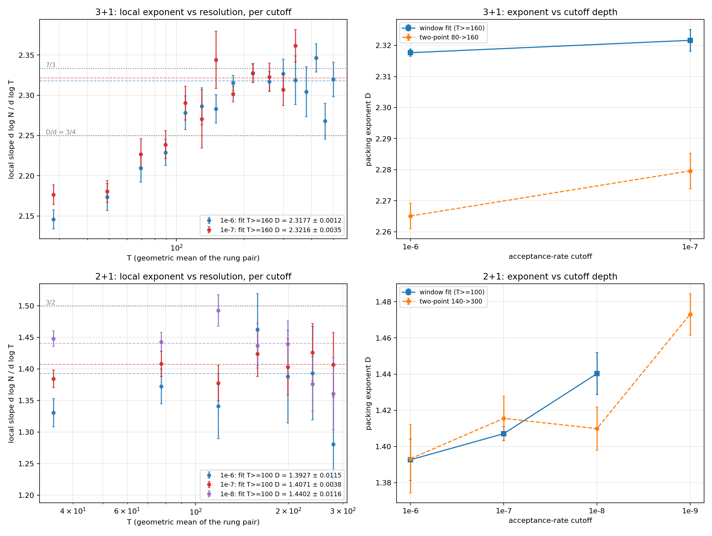

The T = 400–520 extension: the state exponent does not crawl to 7/3
The state-vs-rate discriminator. After the 7/3 chase ended with a cutoff-invariant window value of D = 2.321 (07-11), the process-level log-growth rate b(T) ~ T2.336(8) reopened 7/3 by a side door: under log kinetics the stopped-count slope approaches the rate exponent from below, so the window value could have been a still-rising transient. The prediction was concrete — if the state exponent is secretly 7/3, the local slope must climb toward 2.333 as the ladder extends. It doesn't:

- Extension-only fit (T = 400–520): D = 2.308 ± 0.009 — about 3σ below 7/3 (2.333) and 2.4σ below the measured rate exponent (2.336 ± 0.008). The high-T local slopes (2.35, 2.27, 2.32 for the last three rungs) scatter around the window value with no upward trend.
- The full converged window now spans T = 160–520 (half a decade, up from 0.35): D = 2.3177 ± 0.0012 at 1e-6, versus 2.3216 ± 0.0035 at 1e-7 — the known small depth drift (~+0.004/decade), far too small to reconcile the state value with the rate value.
- Verdict: the state and rate exponents are genuinely different observables. The stopped-count exponent is D ≈ 2.32 and is not crawling anywhere; the log-growth-rate exponent sits ~0.02 above it. The gap — not 7/3 — is now the thing needing a kinetic explanation (an offset term in N ≈ b(T)·ln t + c(T) that grows with T would do it).
- Ladder top: ⟨N⟩ = 1.079×106 worldlines at T = 520 (seed spread 0.4%). The T = 520 grids peaked near 130 GB host RAM — the sparse engine's ceiling is system memory, not VRAM; the tier only ran once the fleet had a 2 TB box.
With this, open question 1 flips from “is it 7/3 after all?” to “why does the rate exponent exceed the state exponent by 0.02?” — a systematics pass on the rate estimate (tail-window dependence, per-seed scatter) is the natural next arm.